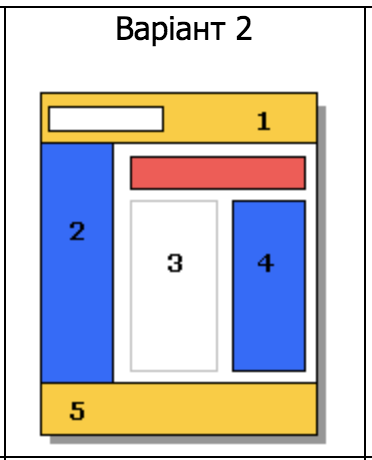
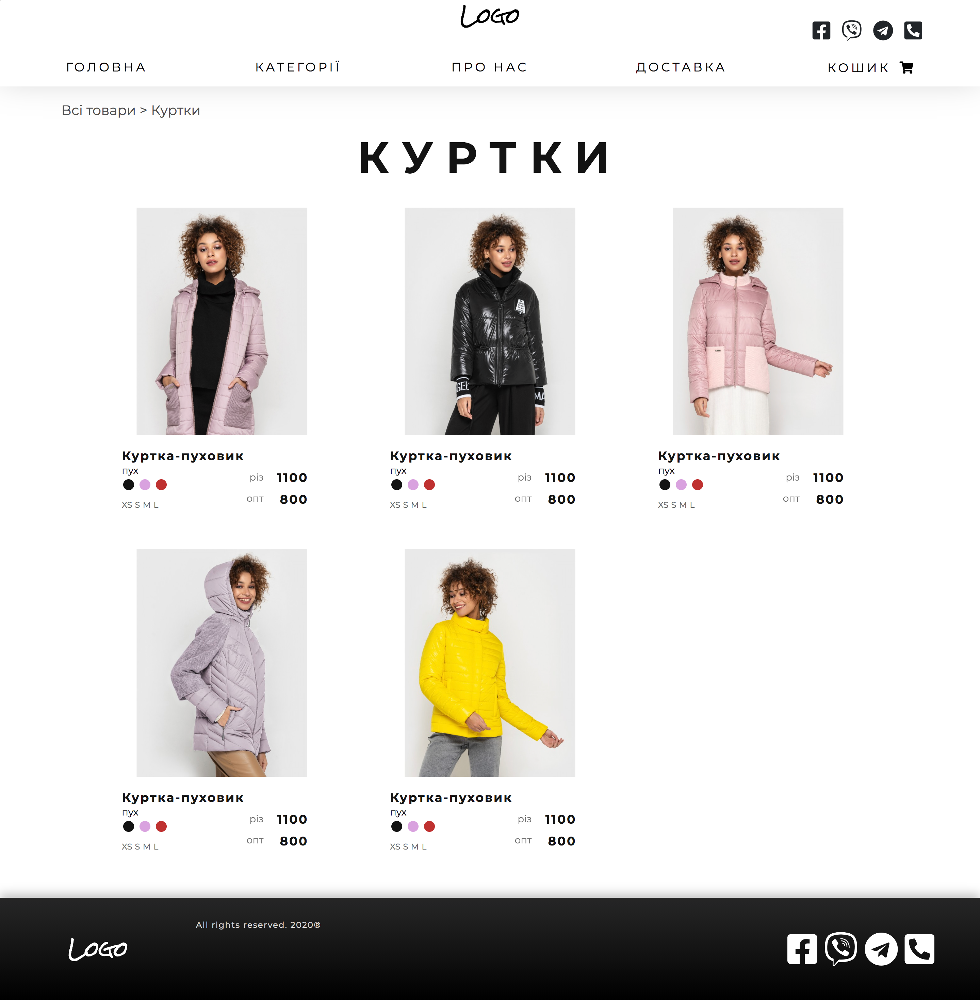
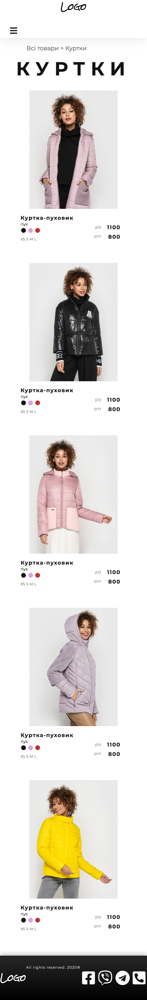
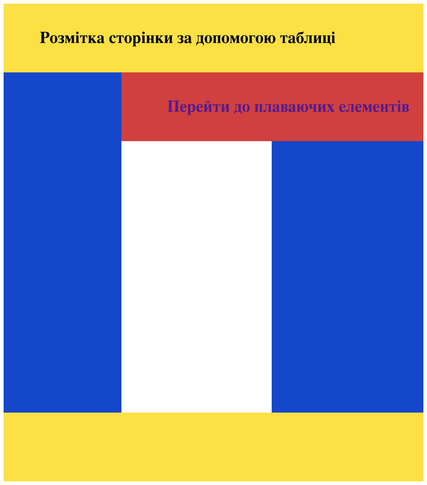
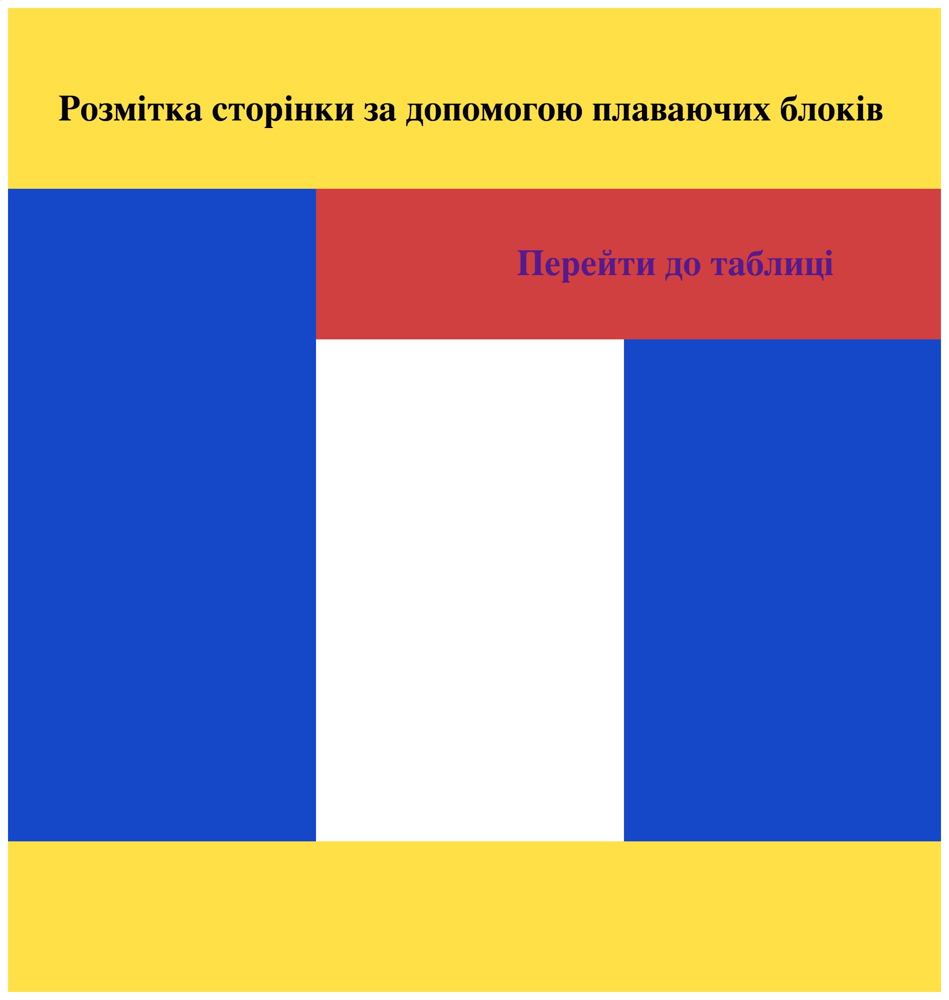

Тема та постановка задачі лабораторної роботи №3
Тема: БЛОЧНА ВЕРСТКА HTML-ДОКУМЕНТУ ЗА МАКЕТОМ.
Мета: придбати практичні навички роботи верстки сторінок засобами CSS, верстки на основі плаваючих елементів,
з’ясувати переваги та недоліки типів макетів веб-сторінок
Варіант: 2

Зовнішній вигляд макету
Для побудови веб-сторінки я обрала адаптивний тип макету, що довзволить зручно переглядати веб-сторінку з
усіх пристроїв.


HTML-код макету
<div class="header">
<div id="topHeader">
<div class="logo">
<nobr>Logo</nobr>
</div>
<div class="miniMedia">...</div>
</div>
</div>
<nav class="navbar sticky-top navbar-expand-md bg-white navbar-dark" id="headerButtons">
<button class="navbar-toggler" type="button" data-toggle="collapse" data-target="#collapsibleNavbar">
<span class="navbar-toggler-icon">
<i class="fas fa-bars" style="color: #121212;; font-size:28px;"></i>
</span>
</button>
<div class="collapse navbar-collapse" id="collapsibleNavbar">...</div>
</nav>
<h1>КУРТКИ</h1>
<div class="products card-deck">
<div class="row align-content-center">
<div class="col-md-4">
<a class="card" href="item.html">...</a>
</div>
</div>
<div class="row">
<div class="col-md-4">
<div class="card">...</div>
</div>
</div>
</div>
</div>
<footer class="footer">
<div class="logo">
<nobr>Logo</nobr>
</div>
<div class="rights">
<p>All rights reserved. 2020®</p>
</div>
<div class="media">...</div>
</footer>
Розмітка сторінки за допомогою таблиці
<table style="width: 100%; height: 100%; border-collapse: collapse;">
<tr>
<td colspan="3" class="yellow text">Розмітка сторінки за допомогою таблиці</td>
</tr>
<tr>
<td rowspan="2" class="blue"></td>
<td colspan="2" class="red" style="text-align: center"><a href="float.html"
class="button text">Перейти до плаваючих елементів</a></td>
</tr>
<tr style="height: 600px">
<td></td>
<td class="blue"></td>
</tr>
<tr>
<td colspan="3" class="yellow"></td>
</tr>
</table>

Розмітка сторінки за допомогою плаваючих блоків
<div class="yellow text" style="width: 100%; height: 100px; overflow: hidden;">
<nobr style="padding-left: 50px;">Розмітка сторінки за допомогою плаваючих блоків</nobr>
</div>
<div class="blue" style="width: 33%; height: 650px; float: left;"></div>
<div class="red" style="width: 67%; height: 150px; float: left;">
<a href="table.html" class="button text">Перейти до таблиці</a>
</div>
<div style="width: 33%; height: 300px; float: left;"></div>
<div class="blue" style="width: 34%; height: 500px; float: left;"></div>
<div class="yellow" style="width: 100%; height: 150px; clear: both;"></div>

ВИСНОВКИ
В рамках даної лабараторної я ознайомилась із різноманіттям типів побудови макету, та застосувала їх при верстці власного Web-додатку.
Для цього я обрала адаптивний тип верстки, оскільки він найкраще підходить для перегляду веб-сторінки на різних пристроях.
Я також порівняла табличний тип верстки із макетуванням на основі плаваючих елементів.
Зрештою, я з'ясувала переваги та недоліки різноманітних типів макетування, що допоможе мені у майбутньому із вибором верстки для веб-додатків.